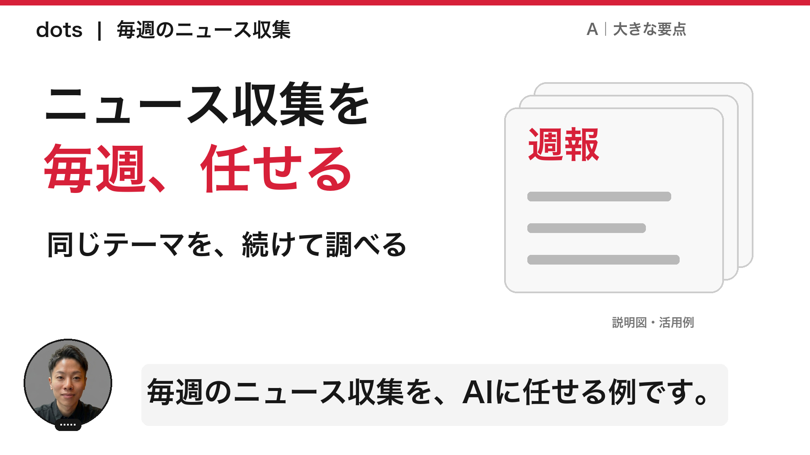
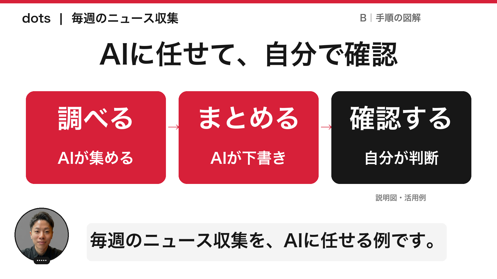
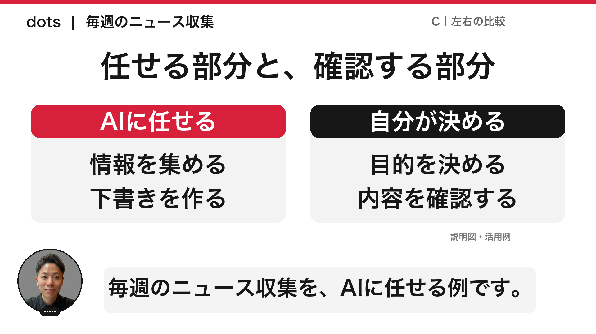
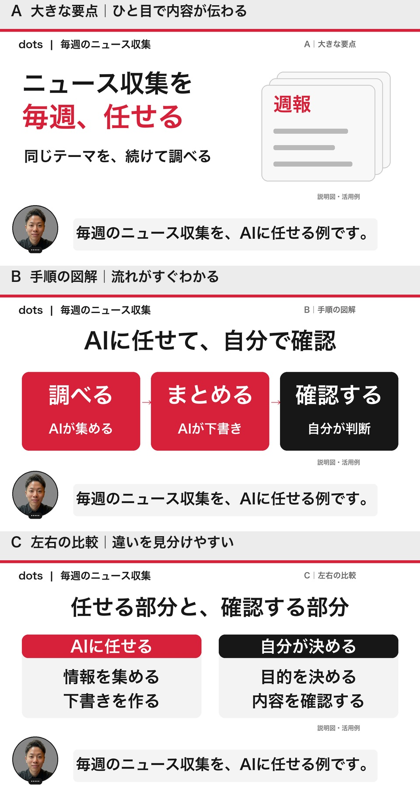

CHIERO / YOUTUBE
読みやすいスライド、
3つの方向。
同じ「毎週のニュース収集」を題材に、文字の大きさと情報の整理を比較できます。
次回の動画に向けた提案です。画像をタップすると原寸で開けます。
A大きな要点
一画面で伝えることを一つに絞ります。導入や結論、覚えてほしい一言に。

タップして拡大 ↗B手順の図解
「調べる → まとめる → 確認する」を順に見せます。操作の説明や、AIと人の役割を整理する場面に。

タップして拡大 ↗C左右の比較
「AIに任せること」と「自分が決めること」を並べます。使い分けや注意点、選択の判断に。

タップして拡大 ↗次回は、説明に合わせて画面を変える。
スライドに加えて、実際の操作画面を必要な部分まで拡大。短いアイキャッチ、ChatGPTで生成するイメージ、図解も組み合わせます。
身近な問い → 実画面で見せる → 図で整理 → 自分で試せる一歩
生成イメージは説明用として使い、実画面や実測結果とは区別します。今回公開済みの動画は維持し、3案を見てから次回の方向を決めます。
3案を一枚で見る
